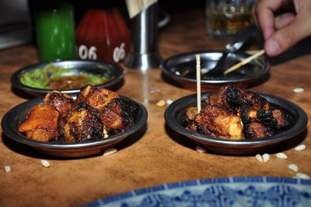
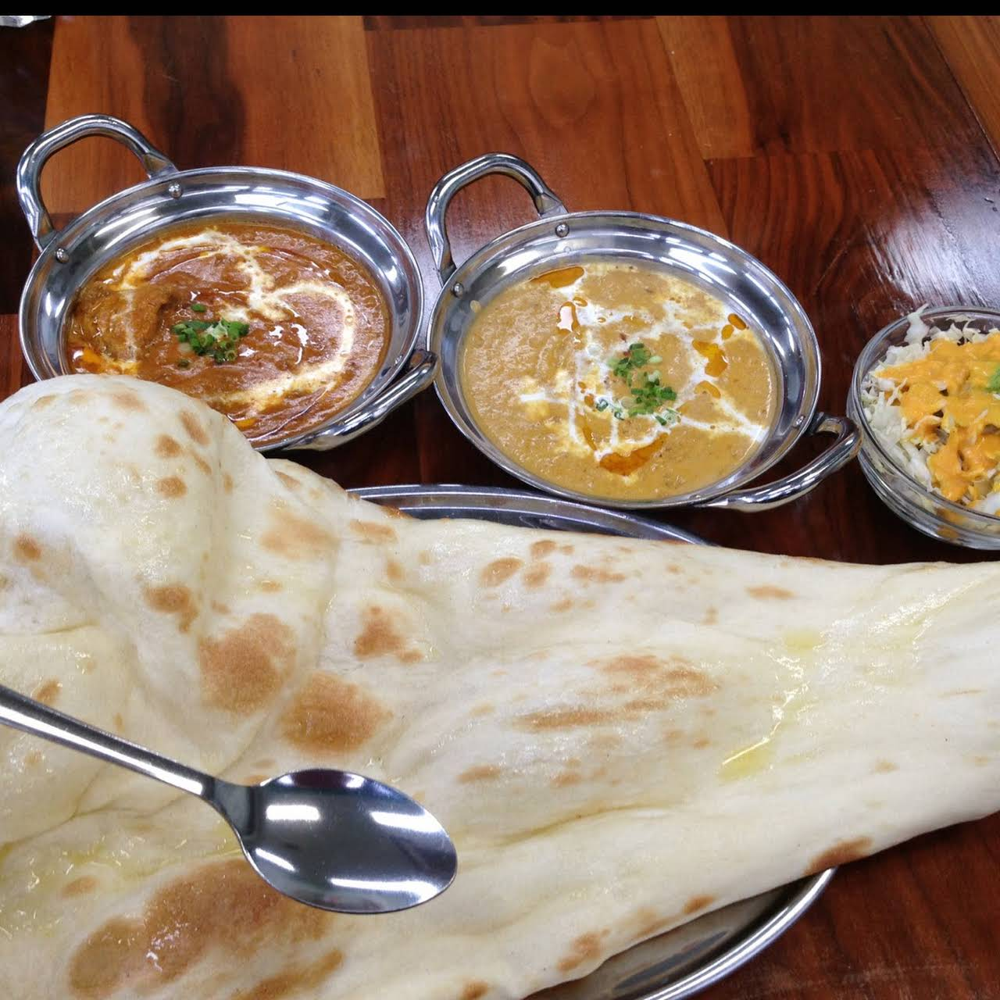

momo

MOMOとは、ネパール式の餃子のこと。見た目は、日本人になじみの深い、半月型のものもあれば、小籠包のような満月型のものもあります。食感は、ニンニクの入っていない餃子そのものなのですが、味は微妙に異なります。その秘密は具にあります。
sekuwa
この料理セクワといいますｓ。肉をたっぷりの香辛料の液に漬け込んだものを炭焼きした、日本でいうところの「串焼き」のようなものです。 ビールのおつまみにこれ以上しっくり来るものはないのではないかと、日本に帰ってきてからも懐かしくなってしまうセクワ。焦げ部分もまた、独特の風味でおすすめの一品です。
nan
商品メニュー
| nepali curry set | |
|---|---|
| nan n curry | 1050円 |
| steam momo | 700円 |
| nepali khana | 13000円 |
| tas | 990円 |